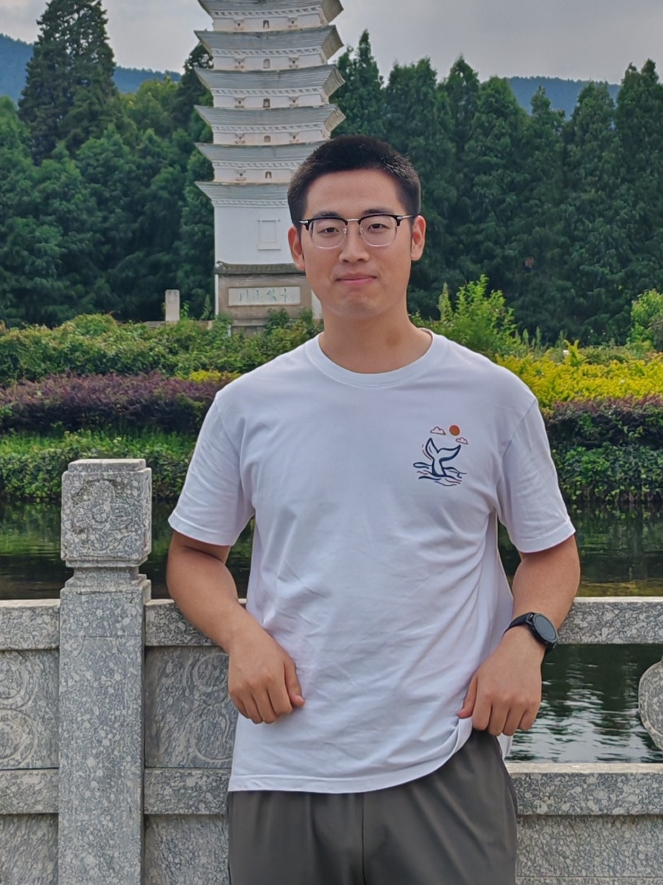

|
 |
Xu LongM.S. in Computer Science and Technology, Nanning Normal University Email: xulong_0826 AT qq.com, xulong AT email.nnnu.edu.cn |
Hi! I am a second-year M.S. student, Department of Computer Science and Technology, Nanning Normal University. I'm honored to be advised by Prof. Yuzhong Peng.
My research interests lie in the general area of machine learning, especially their applications in AI4Science and SBDD, with a wish to push the limit of scientific discovery, as well as build more accessible intelligent systems for academia, industry, and even society.
None
None
None
None
Last updated: 2024/11.